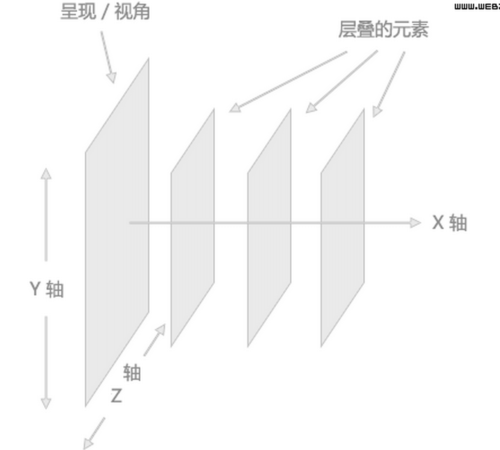

定位
什么是定位(position)？
- 该属性配合top、bottom、left、right(下面简称TRBL)进行相对/绝对位置的确定
定位Position(重难点)另一个栗子
- 某个节点没有设定position属性，position属性默认static（静态）
- position:relative（相对定位）：“坐标原点”为该节点本身左上角
- position:absolute（绝对定位）：“坐标原点”为非static的父级节点左上角，脱离文档流
- position:fixed（固定定位）：“坐标原点”为页面左上角，脱离文档流
- 节点设置的TRBL，为相对于“坐标原点”的距离

定位 & 层级关系z-index还是内栗子
- 只有“同层”的元素方能比较
- 元素按出现的先后顺序展现
- 脱离文档流的元素总是要更靠前
- z-index只能工作在被定义了absolute，fixed或relative三个定位属性的元素中
- 注意：ie,firfox中关于zindex的bug们
复习
- 页面布局的方式
- 浮动float栗子
- 定位position
-
表格Table
定位Position(重难点)另一个栗子
- 某个节点没有设定position属性，position属性默认static（静态）
- position:relative（相对定位）：“坐标原点”为该节点本身左上角
- position:absolute（绝对定位）：“坐标原点”为非static的父级节点左上角，脱离文档流
- position:fixed（固定定位）：“坐标原点”为页面左上角，脱离文档流
- 节点设置的TRBL，为相对于“坐标原点”的距离
定位 & 层级关系z-index还是内栗子
- 只有“同层”的元素方能比较
- 元素按出现的先后顺序展现
- 脱离文档流的元素总是要更靠前
- z-index只能工作在被定义了absolute，fixed或relative三个定位属性的元素中
- 注意：ie,firfox中关于zindex的bug们